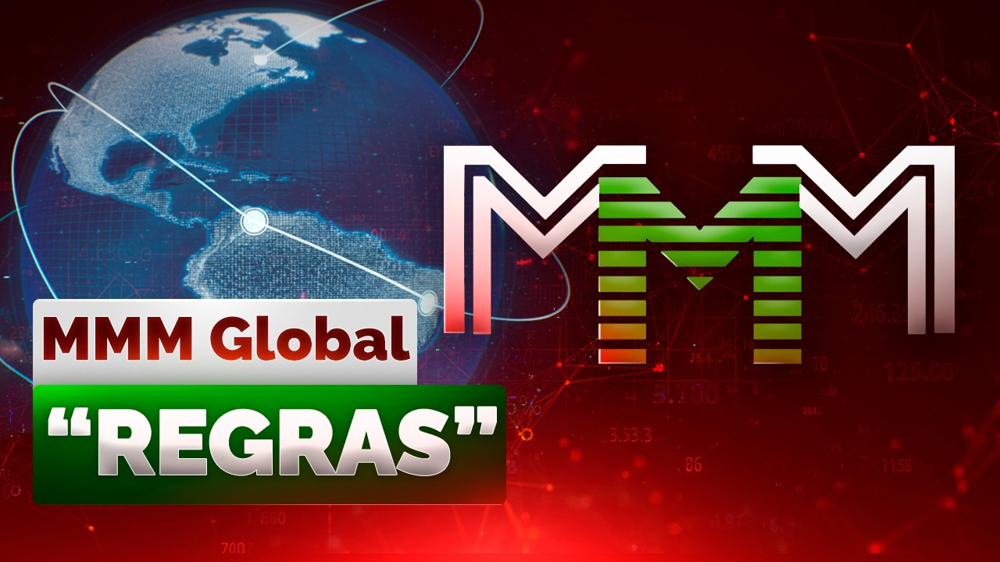

Registro no bot do Telegram: @Mavrodi_robot
Voltar para as "REGRAS". Resumido.
Voltar para “REGRAS”. Parte 1

ATENÇÃO! Ao concordar com as «regras» abaixo indicadas — e ao seguir posteriormente estas minhas recomendações —, confirma que tomou conhecimento do AVISO e tomar a decisão subsequente de participar com a mente sã e a memória sóbria.
11. A quantidade de Mavro abstratos "adquiridos" o bot calculará automaticamente.
Após você prestar ajuda e "comprar" os Mavro abstratos, eles serão exibidos no botão "Saldo" no bot. Como a participação no MMM Global é em USDT, o equivalente dos seus Mavro abstratos também será indicado em USDT entre parênteses.
Os Mavro abstratos Básicos, de qualquer forma, começam a "crescer" a partir do momento em que você os "comprou" e converteu no bot!
12. Para "vender" os Mavro abstratos pela "cotação" já mais alta, o participante precisa solicitar ajuda.
Para isso, entre novamente no bot do Telegram https://t.me/mavrodi_robot e clique no botão "Solicitar ajuda". Em seguida, siga os passos intuitivos no bot. Indique os dados bancários nos quais planeja receber a ajuda: escolha a carteira de criptomoedas e insira o seu número.
Pronto! A partir desse momento, o bot envia ordens com o seu valor e seus dados bancários para outros participantes do Sistema. Eles, assim como você já fez uma vez, fazem transferências para os seus dados e formalizam as ordens devidamente. Ao receber o dinheiro da ordem, confirme obrigatoriamente o recebimento no bot do Telegram https://t.me/mavrodi_robot
Enquanto você não fizer isso, novas ordens não serão formadas para você! Respeite os outros participantes que transferiram seu dinheiro a você sem garantia ou promessa de retorno – confirme tudo rapidamente no bot! "Trate os outros como gostaria que te tratassem".
‼️ Se você for receber o dinheiro, mas não confirmar as ordens no bot, o bot não formará novas ordens, e os Mavro que você possui podem ser zerados pelo consultor! Lembre-se disso sempre.
O valor mínimo de solicitação de ajuda é equivalente a US$ 10.
No caso de o participante ter prestado ajuda com o mínimo de US$ 50 (ou um valor menor, combinado com o consultor), ele só pode "vender" todos os seus Mavro abstratos de uma vez, e não em partes. Em geral e no todo, a recomendação é: se o valor total dos Mavro abstratos do participante pelas "cursos de venda" atuais for inferior a US$ 100, o participante não pode "vender" os Mavro abstratos em partes – apenas inteiros. Lidar com valores menores simplesmente não é viável, são movimentações vazias e desnecessárias nas contas dos participantes. Portanto, se os seus Mavro abstratos "valem" menos de US$ 100 no momento da "venda", você os vende inteiros ou não os mexe e continua a "cultivá-los". Enfim, pautem-se pela viabilidade e pelo bom senso.
‼️ Uma vez a cada dois meses, o bot converterá automaticamente seus Mavro-20% em Mavro-0%, de modo que eles pararão de crescer.
Tudo o que você precisa é entrar no bot pelo menos uma vez a cada dois meses e convertê-los de volta em Mavro-20%. Ou, então, solicitar ajuda pelo valor total ou por uma parte (e o restante converter e deixar "crescer" no Sistema). Assim, o Sistema faz com que os participantes se lembrem dele.
Em primeiro lugar, para excluir a situação em que você se esquece do Sistema. Infelizmente, como mostra a prática, existem participantes que, após prestar ajuda uma vez, não se interessam pelos assuntos do Sistema e de forma alguma participam do seu desenvolvimento (mesmo que seja apenas ao nível de escrever um depoimento sincero sobre a ajuda recebida), mas que esperam a sua hora para solicitar de uma só vez um valor enorme de ajuda.
Isso é errado e não corresponde aos interesses da comunidade. E essa medida permitirá limitar o crescimento dos Mavro abstratos-20% para esses participantes.
Em segundo lugar, essa "regra" mostra diretamente que o Sistema MMM Global não foi criado para o enriquecimento de um círculo restrito de pessoas, mas sim para que a maioria dos participantes se beneficie do seu funcionamento.
13. No prazo de 24 horas após receber ajuda financeira de outros participantes do Sistema MMM, o participante é obrigado a enviar um DEPOIMENTO EM VÍDEO (pode ser sem mostrar o rosto) para a conta do Telegram https://t.me/GenXmanager1 (ou por e-mail com o assunto RECEBIMENTO DE AJUDA para AntiSysteMMM@gmail.com).
Para a sua subsequente e possível publicação (em condições de anonimato, naturalmente, e a meu critério − publicar ou não) nos DEPOIMENTOS do canal do YouTube youtube.com/@BazaMavrodiMMM
Destaque os pontos de forma que o depoimento seja compreensível para quem está totalmente por fora. Afinal, isso é propaganda para os novatos e para os que estão em dúvida.
Os depoimentos em vídeo são necessários exclusivamente para o desenvolvimento do MMM – é a PROPAGANDA do Sistema no qual você recebe esses juros.
Esse é o único objetivo do depoimento! É nisso que você deve se basear ao gravá-los. Além do mais, como vocês mesmos entendem, os depoimentos em texto já não causam nenhum efeito – todo mundo tem câmera, e gravar um depoimento em vídeo sem mostrar o rosto há muito tempo não é um problema.
Portanto! Instrução para gravar o depoimento em vídeo (pode ser sem o rosto):
Do meu ponto de vista, nos depoimentos devem ser dadas respostas às seguintes perguntas:
0️⃣ Qual é o seu nome? Mostrar o seu nome completo não é nada obrigatório, mas o seu primeiro nome você pode dizer, não é? 🙂 Mostrar o rosto também não é obrigatório – você pode filmar o notebook com o banco online ou o dinheiro em espécie sobre a mesa (ou até um gato, um cachorro ou a parede).
1️⃣ Em que Sistema você participa? Com detalhes! Não apenas no Sistema Global de Ajuda Mútua e não apenas no MMM Global. Sim, no Sistema Global de Ajuda Mútua MMM Global. Para que todos entendam bem que Sistema é esse. Seria bom indicar o endereço do site BazaMavrodi.com ou o canal do YouTube de depoimentos youtube.com/@BazaMavrodiMMM
Tipo, entrem e leiam o aviso, como tudo funciona.
2️⃣ Como funciona esse Sistema? Literalmente em duas palavras. Fale tudo como é. Que aqui as transferências são exclusivamente diretas entre as pessoas. Que não há conta única e que o dinheiro não flui para o organizador. Que não há garantias, promessas e, em geral, contratos nenhum. Para maior convicção, pode-se gravar um vídeo do banco online direto do celular ou notebook (pesquisem no Google, é muito simples de fazer!), para que outros participantes vejam suas prestações de ajuda. É isso que deve ser mostrado no depoimento.
3️⃣ Quando e quanto você prestou ajuda, e quando e quanto você recebeu. Datas e valores. Sem enrolação. Com detalhes e essência. Isso é o mais importante. Quando e quanto você prestou ajuda, e quando e quanto já recebeu. Para que o novato entenda tudo. É obrigatório falar sobre os juros! Que é pago supostamente a partir de 20% ao mês. Você pode contar no que planeja gastar o dinheiro. Ou mostrar o que já comprou com esse dinheiro.
Vai levar no máximo 15 segundos.
No total, dá para gravar um depoimento informativo em 40-60 segundos. É isso o que é necessário para encaixá-lo no formato Shorts no YouTube. Esses vídeos têm um alcance muito maior do que os completos – e é isso que precisamos.
Você pode contar em duas palavras como soube do MMM, como se sente sobre o nosso Sistema, dizer algumas palavras de incentivo aos novatos e participantes, desejar algo a todos. Contar sobre seus sonhos, objetivos, etc.
❗️E de forma alguma é obrigatório mostrar o rosto, é muito mais informativo gravar um vídeo do banco online (direto do celular ou notebook: pesquisem no Google como é simples fazer isso). Se você decidir gravar o depoimento com o rosto – é muito bem-vindo! –, então, novamente, seria bom mostrar no vídeo o banco online ou o dinheiro em espécie que você já sacou no caixa eletrônico.
ℹ️ O depoimento deve ser de forma a dissipar as dúvidas daqueles que estão observando o MMM, e não para lhes causar perguntas adicionais. Para que as pessoas queiram se juntar ao nosso Sistema e comecem a participar.
Lembre-se! Os depoimentos em vídeo são necessários para você – você faz isso para si mesmo. Para o Sistema no qual você mesmo participa. Figurativamente falando, você está fortalecendo o poço do qual você mesmo bebe água!
Será maravilhoso se você fizer vídeos mais detalhados conscientemente. Com sinceridade! De coração aberto. Aqui não há o que temer! Aqui tudo é honesto e aberto. E absolutamente legal. Em compensação, isso será, sem dúvida, a garantia do desenvolvimento contínuo do nosso Sistema MMM tão querido!
Isso é necessário por motivos compreensíveis – é a propaganda da nossa causa comum, honesta e legal. Na qual o dinheiro vem apenas dos participantes! Portanto, é preciso se anunciar constantemente para se expandir, até que o Sistema se feche em um ciclo. Então, o dinheiro deixará de sair dele. Mais precisamente, retornará imediatamente através de outros participantes.
‼️ Atenção! O bot não aceitará solicitações de recebimento de ajuda de um participante que já recebeu ajuda antes, até que ele forneça o link do seu depoimento no canal do YouTube com os depoimentos: youtube.com/@BazaMavrodiMMM
14. Não há e não haverá nenhum órgão de fiscalização no Sistema MMM! Nenhuma administração e etc.! Qualquer participante pode se tornar consultor, basta ter vontade. Iguais entre iguais. O Sistema Global de Ajuda Mútua MMM, como vocês já conseguiram entender, é um organismo vivo. E a tudo o que é vivo é inerente a autorregulação. O MMM, nesse sentido, é autossuficiente – vocês mesmos vão se verificar e controlar. Simplesmente ajam com honestidade e de acordo com a consciência, eis toda a verificação. Aqui tudo é construído sobre a confiança. No geral, como na Vida! É compreensível que o sistema financeiro vicioso tenha danado tanto a nossa psique que em todo lugar nós vemos engano e fraude, como se fosse a ordem natural das coisas. E que "não pode ser de outro jeito". Mas pode ser de outro jeito! Para isso é necessário o Gene de confiança. :-))
Por qualquer abuso, o consultor/participante será expulso do MMM por toda a eternidade! Nenhum pedido de desculpas ou arrependimento ajudará. Tenham isso em mente antes de cometerem quaisquer bobagens.
Um pequeno parêntese. Você agora provavelmente está absolutamente convicto de que tudo isso é um golpe, e eu sou o mais comum dos golpistas, interessado exclusivamente em dinheiro? Acertei? E por que é assim? Nunca pensou nisso? Por que você não acredita na Pessoa que não te enganou e apenas quer fazer algo de bom? Que quer ajudar as pessoas ao redor a viver uma vida Humana digna? Por que você acredita muito mais prontamente que ele quer te enganar (e te roubar!)? Será que o mundo de hoje está tão corrompido?!.. Cada um julga a partir de si mesmo. Só o vilão está sempre em alerta e espera uma traição de todos. O mal sempre pega a pessoa normal de surpresa. Mas eu sei que você não é assim – mesmo que o sistema tenha exercido uma forte influência sobre você, você sempre pode se corrigir. Nunca é tarde para mudar. Revisar seus valores e crenças. E até mesmo sua visão de mundo. Você é – uma Pessoa!
15. O roubo no Sistema Global de Ajuda Mútua MMM está excluído, pois todos os fundos estão nas contas pessoais dos próprios participantes e vocês os transferem diretamente uns para os outros sem garantia ou promessa de retorno! Portanto, durmam tranquilos. E além disso, cada participante está interessado no desenvolvimento do Sistema, e por roubo e quaisquer truques, ele será simplesmente expulso sem direito a participação posterior.
No MMM não é vantajoso roubar – aqui é vantajoso agir de acordo com a consciência! Aqui pagam-se juros tão altos!.. Mesmo que não sejam garantidos.
Terceiros também não conseguirão roubar este Sistema de forma alguma. Levar todo o dinheiro, etc. E como, se o dinheiro está espalhado por milhões de contas de pessoas comuns? :-)))
16. Por cada nova pessoa trazida ao MMM (referido), o participante do Sistema (referenciador) recebe um bônus de referência em Mavro abstratos-0%.
Referenciador − é o participante que convida pessoas para o Sistema Global de Ajuda Mútua e recebe por isso bônus de referência em Mavro abstratos-0%.
Referido − é o participante que foi convidado para o Sistema Global de Ajuda Mútua, pela prestação de ajuda do qual o referenciador recebe do Sistema os "bônus de referência" em Mavro abstratos-0%.
O sistema de referência é de um nível: você recebe o bônus de referência apenas por aqueles que convidou pessoalmente. Por aqueles que foram convidados pelos seus convidados, você não recebe nada.
Por cada novo participante convidado para o Sistema Global de Ajuda Mútua, você receberá um bônus em Mavro abstratos-0% (sem crescimento!)
10% do valor da sua primeira prestação de ajuda e 5% de todas as subsequentes!
Esses bônus não são pagos com os fundos do participante convidado, mas sim do Sistema. Para o participante convidado não há nenhuma diferença no sentido de se ele entrou por conta própria ou foi convidado. E alguns convidados pensam erroneamente que vai lhes faltar algo ali – isso não diz respeito a vocês e aos seus Mavro abstratos de forma alguma!
E mais. Não há, é claro, nenhuma limitação para esses Mavro abstratos de bônus de referência. Tragam mesmo que seja para um milhão de Mavro abstratos de bônus! Ou um bilhão! É apenas bem-vindo!!
‼️ Mas ainda assim há algumas limitações: Você receberá o bônus apenas com a condição de que o participante convidado por você não solicite ajuda, figurativamente falando, nem mesmo "venda" parcialmente os seus Mavro abstratos dentro de 30 dias inclusive.
Se ele mexer, se pelo menos uma parte "vender", pronto! – todos os seus Mavro abstratos de bônus são perdidos (queimam) inteiramente.
Caso contrário, todos começarão imediatamente a movimentar os mesmos valores e a receber bônus. Um amigo transferiu-sacou, e você ganhou o bônus. O segundo amigo transferiu-sacou o mesmo valor imediatamente, e você ganhou o bônus de novo, etc.
Consequentemente, você também não pode nem "vender" nem transferir esses seus Mavro abstratos de bônus-0% durante 30 dias. Após o decurso desse prazo, você tem o direito de proceder com os seus Mavro abstratos de bônus-0% nos termos gerais: "vendê-los" imediatamente de forma total ou parcial ou transferi-los para os Mavro abstratos Básicos-20% e continuá-los "cultivando".
P.S. Já estou recebendo perguntas: é possível declarar na célula que todos se convidaram mutuamente, etc. Não, não é possível! A essência é clara para todos. Para que são introduzidos os bônus? Para incentivar os participantes a trabalharem na atração de novos participantes. Apenas novos! E apenas – ao trabalho. E não a truques entrearido, por exemplo, não pode convidar a esposa, já que eles têm um orçamento comum, isso é óbvio para todos! Exceto para alguns espertalhões que se consideram mais inteligentes que os outros. Em suma, não seja dissimulado e aja, em essência, em prejuízo dos interesses do Sistema querido. Pois agindo dessa forma, você age, em última análise, em prejuízo dos seus próprios interesses. Isso será monitorado e reprimido da forma mais rigorosa, tenham isso em mente e depois não chorem.
Darei algumas recomendações úteis.
Se a pessoa duvida do Sistema (ou supõe que você a trouxe aqui exclusivamente para obter os bônus de referência por ela), ofereça a ela metade dos seus bônus de referência na fase inicial. Tipo, vamos dividir tudo em dois! É justo. Para que ela não pense mal de você. E, no geral, você pode presentear com quaisquer dos seus Mavro abstratos confirmados aos conhecidos que estão em dúvida. Não menos de US$ 10 e não mais de US$ 100. Para que eles sintam tudo em si mesmos – receberam ajuda de pessoas desconhecidas! Na prática! Entenderam como tudo aqui é simples. As palavras são uma coisa, e a experiência pessoal é outra. A abordagem funciona perfeitamente! Pois a prática é o único critério da verdade. O recebimento real do dinheiro no nosso caso. Bem, imaginem vocês mesmos. E experimentem.
E mais uma coisa. Geralmente, as pessoas que você convida para participar, a primeira coisa que perguntam é: "E você, quanto investiu?" E essa pergunta é razoável! Você mesmo prestou ajuda? Ou só veio aqui "cortar" os bônus de indicação?.. Entenda, a psicologia é uma coisa tal que, se você mesmo não prestou ajuda (na medida do possível, claro), então você mesmo também olha para tudo isso com desconfiança. E a pessoa que você está convidando sentirá isso perfeitamente. E você também. Afinal, não dá para enganar a si mesmo. Portanto, convidar é muito mais fácil e confortável (e mais eficaz!), quando você mesmo faz tudo com sinceridade. Em resumo, "que vos seja feito segundo a vossa fé". Um princípio de trabalho excelente, por sinal.
17. Os consultores recebem "bônus de consultor".
Os bônus dos consultores chamam-se "bônus de consultor". Esses bônus são creditados em Mavro abstratos-0% pela prestação de ajuda de todos os participantes da célula do consultor. Os bônus são de um nível, já que o Sistema é horizontal – as pessoas transferem dinheiro diretamente umas para as outras.
Os consultores recebem bônus em Mavro abstratos-0%
– 5% das prestações de ajuda de cada participante da célula do consultor.
Os bônus de consultor ficam congelados por 30 dias a partir do momento da confirmação dos Mavro abstratos-20% pelo participante (a partir do momento da transferência real de fundos para outra pessoa), assim como os "bônus de referência". Isso significa que, se o participante solicitar ajuda antes de 30 dias e, figurativamente falando, "vender" os seus Mavro abstratos-20%, todos os bônus do consultor são perdidos (queimam). Isso foi feito para que os mesmos fundos não fiquem indo e voltando e para não credited bônus para si mesmos em vão.
‼️ Esses bônus são necessários exatamente para incentivar o trabalho dos consultores. Portanto, para recebê-los, é preciso trabalhar como consultor 5 dias por semana, no mínimo 4 horas por dia. Responder aos participantes de forma rápida, competente e amigável. Fazer tudo para que o Sistema Global de Ajuda Mútua MMM funcione e se desenvolva!
18. No caso de um pânico em grande escala, um modo de "PAUSA" pode ser introduzido ou os "cursos" de Mavros abstratos podem ser revertidos, dependendo da situação.
Falando de forma geral, a execução das solicitações de pedido de ajuda durante o período de vigência do modo é desacelerada/suspensa, e pela "compra" de Mavro abstratos, pelo contrário, pode ser introduzido um bônus especial (percentual suposto aumentado, etc.).
Todos esses pânicos são sempre de natureza exclusivamente emocional, aleatória e esporádica, e não têm nenhuma base real e regular. (O Sistema em si é funcional! Sobre isso ninguém, nem mesmo os mais ferozes detratores, haters e sabotadores, terá a menor dúvida). Portanto, geralmente é suficiente apenas quebrar a primeira onda. Apagar o processo na sua própria semente. Não permitir que ele ganhe força e adquira um caráter avalanche e incontrolável. Dar aos participantes tempo e a oportunidade de se acalmarem.
‼️ E para não se estressar à toa, repito, sejam razoáveis – participem com recursos que não sejam críticos para vocês. Não sejam gananciosos! Não dá para ganhar todo o dinheiro do mundo.
Em caso de desaparecimento súbito e inesperado de contato comigo (digamos, da minha prisão súbita ou detenção para provocar pânico no Sistema), o modo "PAUSA" é introduzido automaticamente. Após o restabelecimento de contato comigo (através de advogados, por exemplo), eu pessoalmente darei instruções sobre como agir a seguir. Como existem muitas variantes aqui, e é preciso avaliar concretamente e de acordo com a situação.
Mas, em qualquer caso e em qualquer cenário, o Sistema Global de Ajuda Mútua continuará o seu funcionamento. Ninguém conseguirá fechá-lo! Pois simplesmente não há o que fechar aqui. O MMM é apenas pessoas no mundo todo que diariamente transferem seu dinheiro diretamente umas para as outras sem garantia ou promessa de retorno. As pessoas, acaso, dá para fechar? :-))
É preciso lembrar-se disso sempre, não ceder a humores de pânico e não cair nas provocações e incitações das autoridades e de todo tipo de haters. Com um comportamento correto e normal (sim, apenas razoável!) dos participantes – o Sistema é insubmersível!
E, no geral, se algo não estiver claro, pergunte ao consultor através do bot, e ele explicará tudo a você. (E se ainda não ingressou, entre logo no bot do Telegram https://t.me/mavrodi_robot).
É como um ferro de passar: se você começar a ler a instrução dele — bom, não se entende nada! E tudo o que você tem a fazer é — "ligue na tomada e passe!" Se tiver alguém por perto — explica em dois tempos. E por conta própria você vai ficar uma semana tentando entender. Então — pegue o consultor, não tenha vergonha! Ele recebe "bônus" por isso. Sucesso!
P.S. A respeito dos abusos. Todo tipo de artimanhas com multi-registros, truques com bônus, etc. Que, a propósito, são punidos com expulsão vitalícia do Sistema. Lembrem-se! Vocês não estão roubando de mim, não do gerente, não de uns "gatos gordos" (banqueiros e oligarcas), dos quais roubar – Deus manda! Vocês estão roubando dos seus entes queridos, amigos, de cidadãos absolutamente comuns. Iguais a vocês. Dos aposentados e deficientes! Dos carentes. A quem de repente deram esperança – a última, talvez! – e vocês a tiram. Roubam, aproveitando-se do fato de que são mais jovens, mais experientes, mais espertos, mais inteligentes do que eles. Essas pessoas trabalharam a vida toda para vocês, é graças a elas que você se tornou agora tão inteligente, esperto e experiente. É um pecado enganá-los. Você devia ter vergonha. Vergonha, consciência – não são de forma alguma conceitos tão abstratos como parece a você agora. Eu lhes garanto! E depois de muitos e muitos anos, eles aparecerão de repente para você um dia e olharão silenciosamente nos seus olhos. E você não terá o que lhes responder. Lembrem-se disso!
"Vivemos, sem sentirmos o país sob nós". Mas ele existe, esse país! Pobre, bondoso, infeliz, simplório, que agora é rasgado e atormentado impiedosamente por toda escória e imundície. Mas esses não são humanos. Com eles não há o que conversar. Mas vocês – são Pessoas! Não se assemelhem a toda essa imundície. Amém.
Nós Podemos Muito! Bem-vindos!
Voltar para as "REGRAS". Resumido.
Voltar para “REGRAS”. Parte 1
Registro no bot do Telegram: @Mavrodi_robot